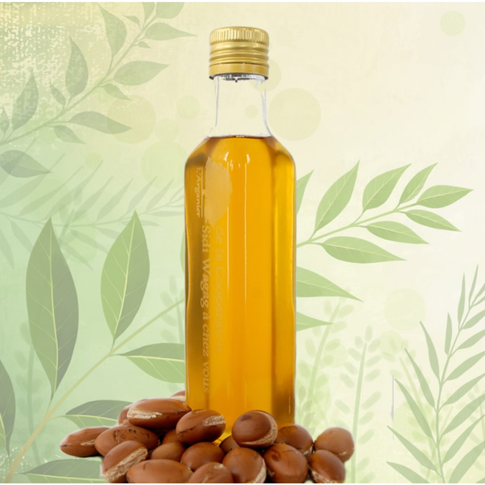

L’arganier, Argania spinosa, est un arbre d’origine tropicale qui, au fil du temps, s’est étendu hors de sa région géographique d’origine pour s’implanter en Afrique subtropicale et principalement dans le sud-ouest marocain.
L'huile d'argan est un des produits locaux les plus symboliques du Maroc. Extraite des noix de l'arganier, cette huile aux mille vertus est utilisée en cuisine, cosmétiques et même en médecine. Louez une voiture et partez à la découverte du paysage rural marocain et de ses arganiers.
L’arganier est menacé de dégradation à cause du climat aride qui sévit dans la région, des cultures massives en plein champ ou dans des serres, du surpâturage des troupeaux, du déboisement pour la combustion et la fabrication du charbon et de l’urbanisation. Même au niveau de la superfice, on assiste chaque année à la disparition de plus de 600 ha d’arganier avec la densité qui est passée de 100 à 30 pieds/ha. Il y a aussi l’absence de régénération de ce patrimoine. Cette situation alarmante met donc en danger le système écologique de la région, et peut même affecter les sources de revenu des habitants qui en dépendent. Tous les intervenants, autorités compétentes et coopératives, sont appelés à agir pour la préservation et la conservation de cet arbre, un patrimoine universel reconnu par l’UNESCO le 8 décembre 1998. «Cet arbre est notre vie, un arbre béni de Dieu qu’on doit sauver de toute dégradation», déclare Aicha Aala, présidente de la coopérative.